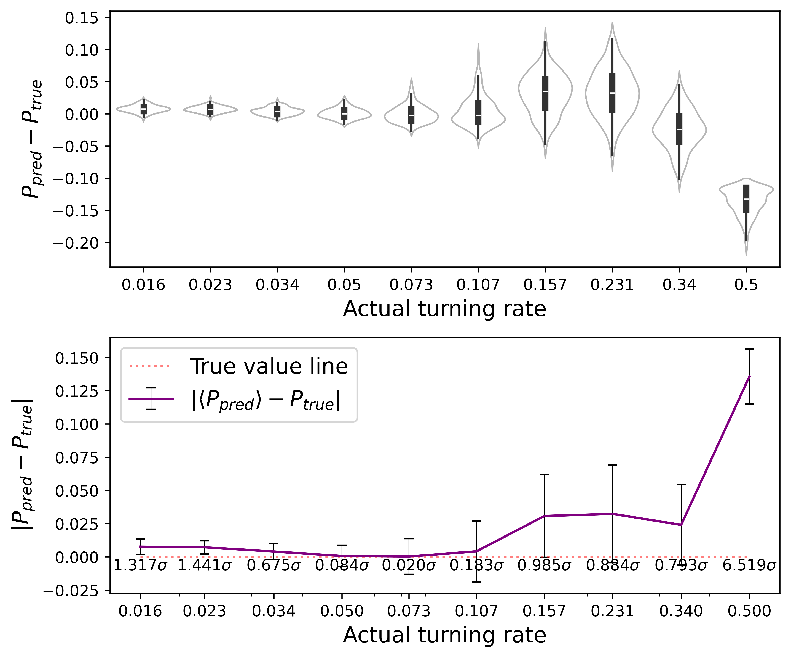

import numpy as npimport h5pyimport globimport reimport tensorflow as tfimport randomimport cmcrameri as cmcimport matplotlib.pyplot as pltimport matplotlib.ticker as tickerfrom scipy.stats import pearsonrfrom tensorflow import kerasfrom keras import backend as Kfrom tensorflow.keras.models import Sequentialfrom tensorflow.keras.layers import Dense,Conv2D,Flatten,Dropout,MaxPooling2D,BatchNormalization,AveragePooling2D,LeakyReLU,GlobalAveragePooling2D,ReLUnp.set_printoptions(precision=3, suppress=True)
2024-04-15 23:17:15.137868: I tensorflow/core/util/port.cc:113] oneDNN custom operations are on. You may see slightly different numerical results due to floating-point round-off errors from different computation orders. To turn them off, set the environment variable `TF_ENABLE_ONEDNN_OPTS=0`.
2024-04-15 23:17:15.163211: I tensorflow/core/platform/cpu_feature_guard.cc:210] This TensorFlow binary is optimized to use available CPU instructions in performance-critical operations.
To enable the following instructions: AVX2 AVX_VNNI FMA, in other operations, rebuild TensorFlow with the appropriate compiler flags.
2024-04-15 23:17:15.608877: W tensorflow/compiler/tf2tensorrt/utils/py_utils.cc:38] TF-TRT Warning: Could not find TensorRT
Setup GPU
First, follow instructions here, or alternatively run:
for a in /sys/bus/pci/devices/*;doecho 0 |sudo tee -a$a/numa_node;done
Some paths need to be explicitly established in terminal in order for the GPU to be recognised (for CUDNN), as well as the right version of ptxas:
These can be integrated into the .bashrc file, or otherwise must be submitted upon every OS start before analysis. Failing to do the first 2 will automatically engage the CPU tensorflow, and failing to only do the last one will likely yield a gpu error.
Don’t forget to restart your IDE (e.g. VSCode) after running the commands above, otherwise it will likely run from the virtual environment configuration before the commands executed. This way we avoid tensorflow skipping registration of GPU devices.
2024-04-15 23:17:17.770553: I external/local_xla/xla/stream_executor/cuda/cuda_executor.cc:998] successful NUMA node read from SysFS had negative value (-1), but there must be at least one NUMA node, so returning NUMA node zero. See more at https://github.com/torvalds/linux/blob/v6.0/Documentation/ABI/testing/sysfs-bus-pci#L344-L355
2024-04-15 23:17:17.817548: I external/local_xla/xla/stream_executor/cuda/cuda_executor.cc:998] successful NUMA node read from SysFS had negative value (-1), but there must be at least one NUMA node, so returning NUMA node zero. See more at https://github.com/torvalds/linux/blob/v6.0/Documentation/ABI/testing/sysfs-bus-pci#L344-L355
2024-04-15 23:17:17.817725: I external/local_xla/xla/stream_executor/cuda/cuda_executor.cc:998] successful NUMA node read from SysFS had negative value (-1), but there must be at least one NUMA node, so returning NUMA node zero. See more at https://github.com/torvalds/linux/blob/v6.0/Documentation/ABI/testing/sysfs-bus-pci#L344-L355
2024-04-15 23:17:17.820546: I external/local_xla/xla/stream_executor/cuda/cuda_executor.cc:998] successful NUMA node read from SysFS had negative value (-1), but there must be at least one NUMA node, so returning NUMA node zero. See more at https://github.com/torvalds/linux/blob/v6.0/Documentation/ABI/testing/sysfs-bus-pci#L344-L355
2024-04-15 23:17:17.820632: I external/local_xla/xla/stream_executor/cuda/cuda_executor.cc:998] successful NUMA node read from SysFS had negative value (-1), but there must be at least one NUMA node, so returning NUMA node zero. See more at https://github.com/torvalds/linux/blob/v6.0/Documentation/ABI/testing/sysfs-bus-pci#L344-L355
2024-04-15 23:17:17.820684: I external/local_xla/xla/stream_executor/cuda/cuda_executor.cc:998] successful NUMA node read from SysFS had negative value (-1), but there must be at least one NUMA node, so returning NUMA node zero. See more at https://github.com/torvalds/linux/blob/v6.0/Documentation/ABI/testing/sysfs-bus-pci#L344-L355
2024-04-15 23:17:17.915699: I external/local_xla/xla/stream_executor/cuda/cuda_executor.cc:998] successful NUMA node read from SysFS had negative value (-1), but there must be at least one NUMA node, so returning NUMA node zero. See more at https://github.com/torvalds/linux/blob/v6.0/Documentation/ABI/testing/sysfs-bus-pci#L344-L355
2024-04-15 23:17:17.915779: I external/local_xla/xla/stream_executor/cuda/cuda_executor.cc:998] successful NUMA node read from SysFS had negative value (-1), but there must be at least one NUMA node, so returning NUMA node zero. See more at https://github.com/torvalds/linux/blob/v6.0/Documentation/ABI/testing/sysfs-bus-pci#L344-L355
2024-04-15 23:17:17.915834: I external/local_xla/xla/stream_executor/cuda/cuda_executor.cc:998] successful NUMA node read from SysFS had negative value (-1), but there must be at least one NUMA node, so returning NUMA node zero. See more at https://github.com/torvalds/linux/blob/v6.0/Documentation/ABI/testing/sysfs-bus-pci#L344-L355
2024-04-15 23:17:17.915881: I tensorflow/core/common_runtime/gpu/gpu_device.cc:1928] Created device /device:GPU:0 with 1188 MB memory: -> device: 0, name: NVIDIA GeForce RTX 4060 Laptop GPU, pci bus id: 0000:01:00.0, compute capability: 8.9
fixed_seed =296#choose seed (comment out if not needed)if'fixed_seed'inlocals(): keras.utils.set_random_seed(fixed_seed)print("Running program with fixed seed:",fixed_seed)else:print("Running program with random seed.")def make_net(shape): model = Sequential() model.add(Conv2D(filters=3, kernel_size=(3, 3), padding="same", input_shape=shape)) model.add(MaxPooling2D(pool_size=(2, 2), padding="same")) model.add(ReLU()) model.add(BatchNormalization()) model.add(Conv2D(filters=4, kernel_size=(5, 5), padding="same")) model.add(MaxPooling2D(pool_size=(2, 2), padding="same")) model.add(ReLU()) model.add(BatchNormalization()) model.add(Conv2D(filters=6, kernel_size=(5, 5), padding="same")) model.add(MaxPooling2D(pool_size=(2, 2), padding="same")) model.add(ReLU()) model.add(BatchNormalization()) model.add(GlobalAveragePooling2D())with options({"layout_optimizer": False}): model.add(Dropout(0.1)) model.add(Dense(units=128, activation="relu"))with options({"layout_optimizer": False}): model.add(Dropout(0.1)) model.add(Dense(units=3, activation="relu")) model.add(Flatten()) model.add(Dense(units=1, activation="linear"))return model
Running program with fixed seed: 296
model = make_net(shape)
/home/danielle/venv-tflow/lib/python3.10/site-packages/keras/src/layers/convolutional/base_conv.py:99: UserWarning: Do not pass an `input_shape`/`input_dim` argument to a layer. When using Sequential models, prefer using an `Input(shape)` object as the first layer in the model instead.
super().__init__(
2024-04-15 23:17:38.048130: I external/local_xla/xla/stream_executor/cuda/cuda_executor.cc:998] successful NUMA node read from SysFS had negative value (-1), but there must be at least one NUMA node, so returning NUMA node zero. See more at https://github.com/torvalds/linux/blob/v6.0/Documentation/ABI/testing/sysfs-bus-pci#L344-L355
2024-04-15 23:17:38.048352: I external/local_xla/xla/stream_executor/cuda/cuda_executor.cc:998] successful NUMA node read from SysFS had negative value (-1), but there must be at least one NUMA node, so returning NUMA node zero. See more at https://github.com/torvalds/linux/blob/v6.0/Documentation/ABI/testing/sysfs-bus-pci#L344-L355
2024-04-15 23:17:38.048459: I external/local_xla/xla/stream_executor/cuda/cuda_executor.cc:998] successful NUMA node read from SysFS had negative value (-1), but there must be at least one NUMA node, so returning NUMA node zero. See more at https://github.com/torvalds/linux/blob/v6.0/Documentation/ABI/testing/sysfs-bus-pci#L344-L355
2024-04-15 23:17:38.048544: I external/local_xla/xla/stream_executor/cuda/cuda_executor.cc:998] successful NUMA node read from SysFS had negative value (-1), but there must be at least one NUMA node, so returning NUMA node zero. See more at https://github.com/torvalds/linux/blob/v6.0/Documentation/ABI/testing/sysfs-bus-pci#L344-L355
2024-04-15 23:17:38.048598: I external/local_xla/xla/stream_executor/cuda/cuda_executor.cc:998] successful NUMA node read from SysFS had negative value (-1), but there must be at least one NUMA node, so returning NUMA node zero. See more at https://github.com/torvalds/linux/blob/v6.0/Documentation/ABI/testing/sysfs-bus-pci#L344-L355
2024-04-15 23:17:38.048648: I tensorflow/core/common_runtime/gpu/gpu_device.cc:1928] Created device /job:localhost/replica:0/task:0/device:GPU:0 with 1188 MB memory: -> device: 0, name: NVIDIA GeForce RTX 4060 Laptop GPU, pci bus id: 0000:01:00.0, compute capability: 8.9
Optimizer
#optimizer = keras.optimizers.Adam(learning_rate=0.0003)optimizer = keras.optimizers.SGD(learning_rate=0.001) #usual learning rate for our model is 0.006model.compile(loss='mae', optimizer=optimizer, metrics=['mae'])model.summary()
WARNING: All log messages before absl::InitializeLog() is called are written to STDERR
I0000 00:00:1713219462.626488 114964 service.cc:145] XLA service 0x79ea28003860 initialized for platform CUDA (this does not guarantee that XLA will be used). Devices:
I0000 00:00:1713219462.626514 114964 service.cc:153] StreamExecutor device (0): NVIDIA GeForce RTX 4060 Laptop GPU, Compute Capability 8.9
2024-04-15 23:17:42.631484: I tensorflow/compiler/mlir/tensorflow/utils/dump_mlir_util.cc:268] disabling MLIR crash reproducer, set env var `MLIR_CRASH_REPRODUCER_DIRECTORY` to enable.
2024-04-15 23:17:42.659190: I external/local_xla/xla/stream_executor/cuda/cuda_dnn.cc:465] Loaded cuDNN version 8907
I0000 00:00:1713219463.238868 114964 device_compiler.h:188] Compiled cluster using XLA! This line is logged at most once for the lifetime of the process.
print("Evaluate on test data:")results = model.evaluate(x_val, y_val, batch_size=batch_size, verbose=0)print("Test loss:", results)
Evaluate on test data:
Test loss: [0.03025873564183712, 0.0305156409740448]
Alternatively, load a trained model
name ="orientation0296"model = tf.keras.models.load_model(f'../models/{name}.keras')model.summary()
Analyse training results
prediction = model.predict(x_val)print("Shape of prediction : ", np.shape(prediction))
63/63 ━━━━━━━━━━━━━━━━━━━━ 1s 2ms/step
Shape of prediction : (2000, 1)
from cmcrameri import cmimport seaborn as snsimport pandas as pdbins = np.logspace(-6,-1,10, base=2)*0.85v = prediction.T[0]colors = cm.batlowS(np.digitize(v, bins))colors_actual = cm.batlowS(np.digitize(np.unique(y_val),bins))fig, (ax1,ax2) = plt.subplots(nrows=2,ncols=1,figsize=(7,6),dpi=600)df = pd.DataFrame()df.insert(0, "predicted", v - y_val)df.insert(1, "actual", y_val)sns.violinplot( ax=ax1, data=df, x="actual", y="predicted", color="w", alpha=0.7, density_norm="width", linewidth=1, inner="box", inner_kws={"box_width": 4, "color": "0.2"}, )ax1.set_xlabel("Actual turning rate",fontsize=14)ax1.set_ylabel(r"$P_{pred}-P_{true}$",fontsize=14)std = []means = []overlap = []std_div = []accuracy =5e-3print ("Prediction means and standard deviations.")for val in np.unique(y_val): v_mapped = v[np.where(y_val == val)] stdev = np.std(v_mapped) std.append(stdev) mean = np.mean(v_mapped) overlap.append((val + accuracy >= np.min(v_mapped)) & (val - accuracy <= np.max(v_mapped))) within_std =abs(val-mean)/stdevprint (f"Actual value {val}: Average = {mean:.5f} +- {stdev:.5f}; Expected value within {within_std:.3f} stdevs of mean") std_div.append(within_std)print(f"With accuracy {accuracy}, overlap ratio:", np.sum(overlap)/len(overlap))print("(Min, Max, Avg) STD:", np.min(std), np.max(std), np.mean(std))print("Pearson's correlation coeff: ", pearsonr(y_val, v).statistic)for val in np.unique(y_val): v_mapped = v[np.where(y_val == val)] means.append(np.mean(v_mapped))ax2.errorbar(np.sort(np.unique(y_val)),np.abs(means-np.sort(np.unique(y_val))),yerr=(std),ecolor='black',elinewidth=0.5,capsize=3,color='purple',label=r'$|\langle P_{pred} \rangle -P_{true}|$')ax2.plot(np.sort(np.unique(y_val)),np.zeros(np.unique(y_val).shape[0]),color='red',label='True value line',linestyle='dotted',alpha=0.5)ax2.legend(loc='upper left',fontsize=14)counter =0for i in np.sort(np.unique(y_val)): ax2.text(i,-0.01,f"${std_div[counter]:.3f} \sigma$",ha="center") counter = counter +1ax2.set_xscale("log")ax2.get_xaxis().set_major_formatter(ticker.ScalarFormatter())ax2.set_xticks(np.unique(y_val))ax2.set_xlabel("Actual turning rate",fontsize=14)ax2.set_ylabel(r"$|P_{pred}-P_{true}|$",fontsize=14)fig.tight_layout()#plt.suptitle("CNN Turning Rate Predictions Against Actual Values")
Prediction means and standard deviations.
Actual value 0.016: Average = 0.02372 +- 0.00586; Expected value within 1.317 stdevs of mean
Actual value 0.023: Average = 0.03020 +- 0.00500; Expected value within 1.441 stdevs of mean
Actual value 0.034: Average = 0.03804 +- 0.00598; Expected value within 0.675 stdevs of mean
Actual value 0.05: Average = 0.05067 +- 0.00795; Expected value within 0.084 stdevs of mean
Actual value 0.073: Average = 0.07274 +- 0.01338; Expected value within 0.020 stdevs of mean
Actual value 0.107: Average = 0.11119 +- 0.02288; Expected value within 0.183 stdevs of mean
Actual value 0.157: Average = 0.18778 +- 0.03124; Expected value within 0.985 stdevs of mean
Actual value 0.231: Average = 0.26336 +- 0.03662; Expected value within 0.884 stdevs of mean
Actual value 0.34: Average = 0.31593 +- 0.03034; Expected value within 0.793 stdevs of mean
Actual value 0.5: Average = 0.36436 +- 0.02081; Expected value within 6.519 stdevs of mean
With accuracy 0.005, overlap ratio: 0.9
(Min, Max, Avg) STD: 0.004999608 0.03662132 0.018006746
Pearson's correlation coeff: 0.9540743353623884

fig,ax=plt.subplots(1,1,figsize=(9,6))ax.scatter(y_val, v, c=colors, alpha=0.25)ax.scatter(np.unique(y_val), np.unique(y_val), marker="_", color='k', s=200)ax.set_xscale("log")ax.get_xaxis().set_major_formatter(ticker.ScalarFormatter())ax.set_xticks(np.unique(y_val))ax.set_facecolor([0.98,0.98,0.98,1])for val in bins: ax.axvline(val, alpha=0.05, c='k')ax.set_xlabel("Input turning rate")ax.set_ylabel("Predicted turning rate")